Computer Vision III (IN2375) — Notes 1: Object Detection
本文笔记中英混杂，因为期末考试纯英文方便记忆，解释部分用中文方便理解
These notes deviate from the order of the lecture slides and start from the motivation instead. We first look at how detection is evaluated, then follow the classical single-stage pipeline — from template matching to feature-based detectors such as the Viola–Jones detector, HOG features and non-maximum suppression (NMS) — and its first deep-learning incarnation, OverFeat. We then study object proposals (selective search, edge boxes) and the two-stage R-CNN family: R-CNN, SPPNet and Fast R-CNN; to make proposal generation learnable, the region proposal network (RPN) takes us to Faster R-CNN. Finally we return to modern one-stage methods — YOLO, SSD, focal loss and RetinaNet — and close with keypoint-based detection (CornerNet, CenterNet), sequential detection, and spatial transformer networks.
1. Motivation
Computer Vision的目标是mimic the human visual system。这个领域起步很早： 1963年MIT的Project MAC（下图，也就是后来的CSAIL）就在研究如何让机器"看懂"图像； 发展到今天，视觉已经是AI的中心课题之一。

本课关注的是RGB image和RGB video在不同颗粒度下的semantic understanding， 属于high-level computer vision：从整张图只给一个label的classification，到本课的 detection、segmentation、tracking，在颗粒度Granularity上对图像的理解越来越细。在object detection这一层，我们用bounding box这种coarse的description来localize object.
QUIZHow many parameters define a bounding box?
4个，但参数化不唯一。下图的例子用 \((x_0, y_0, h, w)\)，把 \((x_0, y_0)\) 定在box的左下角：
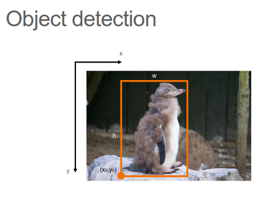
同样是4个参数，常见的定法还有：
- 两个对角点 \((x_{min}, y_{min}, x_{max}, y_{max})\)：Pascal VOC的标注格式， 例如CornerNet预测的就是top-left和bottom-right这对corner
- 左上角加宽高 \((x, y, w, h)\)：例如COCO的标注格式
- 中心点加宽高 \((c_x, c_y, w, h)\)：例如YOLO和DETR用这种，DETR还把四个数 归一化到 \([0, 1]\)
与2d坐标系轴对齐的矩形axis-aligned bounding box存在四个自由度（可以旋转的有5个dof），满足自由度参数化即可，但选择何种会影响回归loss的性质（例如DETR的L1 loss问题），本课主要采用基于矩形左下角的\((x_0, y_0)\)定义的\((x_0, y_0, h, w)\)四个参数来定义bounding box.
Remark：计算机视觉的惯例是 \(x\) 沿图像宽度方向、\(y\) 沿高度方向， 坐标原点在左上角，所以 \(y\) 轴朝下，但是各家api其实有不同：
- OpenCV和CV/Graphics research默认：左上角原点，\(y\) 向下
- Unity和OpenGL的屏幕坐标：左下角原点，\(y\) 向上
本课作为研究导向的一门本科生高年级/低年纪研究生课程，遵循左上角原点的坐标轴定义
2. Evaluation: how do we measure a detector?
我们在认识了bounding box之后，那么我们当然想知道模型预测的好不好准不准，那么我们需要评估预测的bouding box与ground truth的bouding box。
2.1 Region overlap: IoU
首先我们需要定义两个bbox之间的关系(Region overlap)，因此引入了Intersection over Union (IoU) 也叫 Jaccard Index, 下图IoU中我们看到, IoU是两者交集的面积除以两者并集的面积

2.2 TP / FP / FN, precision and recall
在object detection任务的evaluation我们有以下三种情况：
- TP = True positive表示有物体且正确框住
- FP = False positive表示没有物体但错框
- FN = False negative表示有物体但没有框
Precision评估模型多precise，其中 \(TP + FP\) 是predicted boxes的数量。
Recall评估模型召回有多好，其中 \(TP + FN\) 是ground truth boxes的数量。
2.3 What counts as a positive match?
那么当我们bounding box框住一片区域，这篇区域是true positive 还是 false positive? 我们用IoU作为threshold来评判模型预测的bbox和GT的bbox，例如在MS-COCO和PASCAL VOC中当IoU大于0.5即为positive match. 同时每一个prediction和gt box是一一对应的，如果有多个那么是存在错误
2.4 Average precision (AP)
把precision和recall结合我们得到了average precision(AP)的metric, 横轴用recall竖轴用precision, 对于预测结果，在recall和precision构成的1x1的正方形区域内，与坐标轴围成的面积越大越好
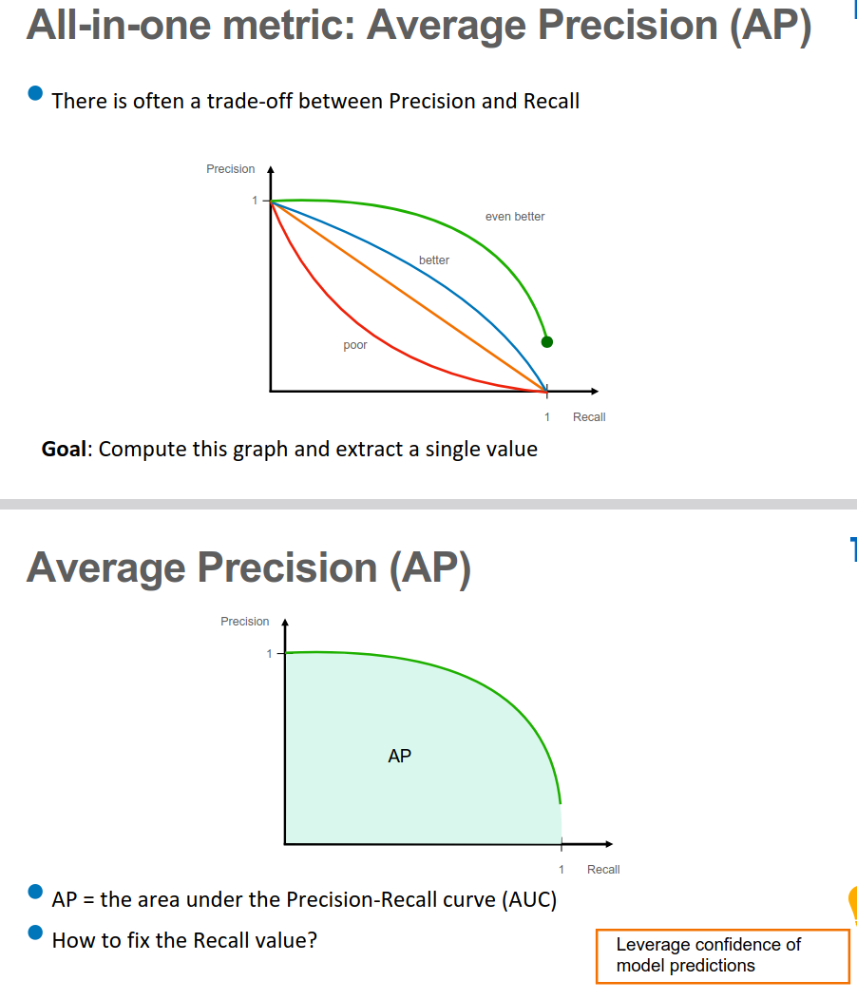
2.5 Computing average precision
以下是计算AP的步骤：
- Sort the predicted boxes by confidence score.
- For each prediction, find the associated ground truth. Note: the ground truth must not be assigned yet, and the prediction must pass the IoU threshold.
- Compute cumulative TP and FP. Example with three predictions: TP = [1, 0, 1], FP = [0, 1, 0] → cTP = [1, 1, 2], cFP = [0, 1, 1].
- Compute precision and recall (#GT = 3, so TP + FN = 3): precision = cTP divided by the prediction index → [1/1, 1/2, 2/3]; recall = cTP divided by #GT → [1/3, 1/3, 2/3].
- Plot the precision–recall curve; AP is the area beneath it (numerical integration). ==
2.6 AP flavours and mAP

我们可以不同定位精度要求下的 AP 平均起来以及把每个类别的 AP 平均得到模型更全面的性能评价 - AP may be averaged over multiple IoU thresholds. - mAP is the average over object categories. 如图中 AP = .50:.05:.95 即从 IoU = 0.50 开始，每次增加 0.05，一直到 0.95，在每个IoU threshold下面都计算一次AP,最后取平均 $\(AP = \mathrm{mean}(AP_{50}, AP_{55}, \ldots, AP_{95})\)$
3. Classical one-stage detection
3.1 Template matching
在经典one-stage detextion里，我们最简单的想法是定义一个metric，用一个物体图像作为template，通过sliding window扫过整张图片，计算每个位置和template的correlation，其中high correlation的region认为是object, bbox的大小就是template的大小：
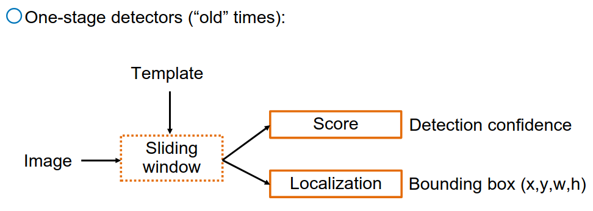
我们定义matching函数为 \(L(x_0, y_0) = d(I_{(x_0, y_0)}, T)\)，其中 \(d\) 是distance （或correlation）metric，\(I_{(x_0, y_0)}\) 是以 \((x_0, y_0)\) 为位置的image region， \(T\) 是template。\(d\) 距离或者相关可以用以下函数来度量：
-
Sum of squared distances (SSD) / mean squared error (MSE)：
\[d(I, T) = \frac{1}{n} \sum_{x,y} \big( I(x,y) - T(x,y) \big)^2\]但是MSE对intensity变化非常敏感：光照变亮、对比度改变都会让distance变大， 即使物体本身没有变。
-
于是我们做normalization，得到Normalised cross-correlation (NCC)：
\[d(I, T) = \frac{1}{n} \sum_{x,y} \frac{I(x,y) \, T(x,y)}{\sigma_I \, \sigma_T}\]其中 \(\sigma_I\) 和 \(\sigma_T\) 分别是image region和template的standard deviation。 除以标准差后，NCC对乘性的contrast增益（gain）(例如整体变亮两倍)invariant。
-
但是NCC依然对加性的brightness偏移（offset）敏感，我们用 Zero-normalised cross-correlation (ZNCC) 代替：
\[d(I, T) = \frac{1}{n} \sum_{x,y} \frac{\big( I(x,y) - \mu_I \big) \big( T(x,y) - \mu_T \big)}{\sigma_I \, \sigma_T}\]其中 \(\mu_I\)、\(\mu_T\) 分别是image region和template的mean。先减均值再除标准差， ZNCC对affine intensity change（gain + offset）都invariant。
QUIZCan I just swap SSD with NCC in my code?
No. SSD是distance，要最小化；NCC是similarity，要最大化。直接替换会把最差的 位置当成最好的，所以需要把argmin改成argmax（或改用 1 − NCC 作为distance）。
但是template matching有根本性的问题：
- (Self-)occlusions（例如pose变化造成的遮挡），template对不上
- Changes in appearance：template是固定的，物体外观一变就失效
- 目标的position、scale、aspect ratio全都unknown，只能对所有组合做 brute-force search，非常inefficient
3.2 Feature-based detection: Viola–Jones
新的one-stage detectors不再用template做sliding window，而是先对RGB pixel values做 feature extraction，再在feature上同时做classification和localization(bbox regression)：
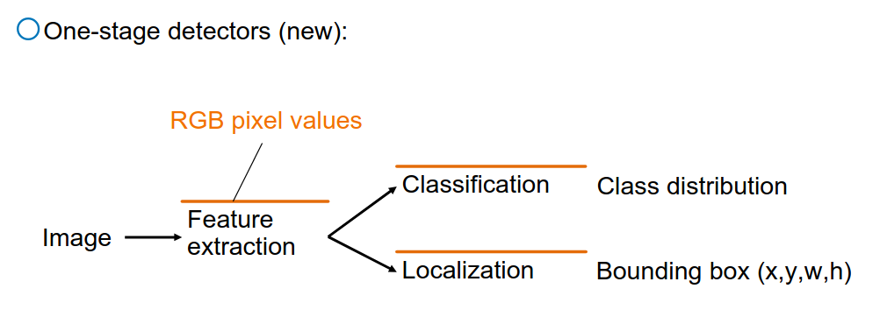
idea是learn feature-based classifiers invariant to natural object changes。 但随之而来的问题是features are not always linearly separable，单个简单分类器不够用， 所以我们learn multiple weak learners，组合成一个strong classifier（boosting）。
Viola–Jones detector的流程：
- 先定义大量的 Haar-like features：如下图中竖条、横条等黑白矩形组合，feature value = 白色区域像素总和 − 黑色区域像素总和。一个 Haar feature 可以放在 detection window 中不同的位置，并取不同的 width 和 height，因此即使一个很小的 detection window 中也可以产生十几万个 candidate features。每个 Haar feature \(f_j(x)\) 再配上一个 threshold \(\theta_j\) 和方向（polarity），就构成一个 weak classifier / weak learner \(h_j(x)\)，例如“如果这个 Haar feature 的 response 小于某个 threshold 就判断为 face，否则判断为 non-face”。单个 Haar feature 只能检查一种很简单的局部亮暗关系，所以单独分类能力通常很弱。
由于训练和检测时需要计算大量 Haar features，Viola-Jones 使用 integral image（积分图）加速。积分图中每个位置存储从图像左上角到该位置的累计像素和，因此计算任意矩形区域的像素和时，只需读取矩形四个角对应的积分图值，通过“右下 − 上方 − 左方 + 左上”得到结果，复杂度为 \(O(1)\)。例如原图为：
对应的 integral image 为：
如果想求右下角 \(2\times2\) 区域 \(\begin{bmatrix}5&6\8&9\end{bmatrix}\) 的像素和，不需要重新计算 \(5+6+8+9\)，而是直接利用积分图四个位置得到 \(45-6-12+1=28\)。因此无论矩形有多大，矩形像素和都只需要 4 次查表，一个由多个矩形组成的 Haar feature 也就可以非常快地计算。

- 然后按下图的步骤用 AdaBoost 训练。训练数据是大量固定大小的 positive samples（face）和 negative samples（non-face），而上面的十几万个 Haar features 是候选的分类特征，两者不要混淆。训练开始时，每个 training sample 都有一个 weight \(w_i\)，最开始通常近似相同；这个 weight 表示当前这一轮训练中这个 sample 有多重要。对于每一个 candidate Haar feature，先在所有 training samples 上计算它的 feature value，并寻找能够使分类 error 最小的 threshold 和 polarity，从而得到这个 feature 对应的最佳 weak classifier。然后计算它的 weighted error
AdaBoost 会把所有 candidate weak classifiers 都比较一遍，在当前这一轮选出 weighted error 最低的那个保存下来。因此假如有十几万个 Haar features，一轮训练实际上就是从这十几万个候选中挑出当前最好的 一个。选完之后，提高这个 weak classifier 分错的 samples 的权重、相对降低已经分对的 samples 的权重。这样下一轮重新寻找最佳 weak classifier 时，如果某个 classifier 仍然把这些“难样本”分错，它的 weighted error 就会很大，因此下一轮会倾向于选择一个能够解决上一轮错误的新 Haar feature。重复 \(N\) 轮，就会从最初十几万个 candidate features 中依次选出 \(N\) 个真正有用的 weak classifiers，而不是把十几万个 features 全部用于最终检测。
例如第一轮所有样本权重相同，某个 Haar feature 能正确分类大部分人脸，只把一个比较困难的人脸分错，那么它可能被选为第一个 weak classifier。随后这个被分错的人脸 sample 的 weight 会提高。第二轮重新测试所有 candidate Haar features 时，一个能够正确识别这个困难样本的 Haar feature 就更有优势。因此 AdaBoost 的核心思想就是 不断重新调整 training samples 的重要性，让后面的 weak classifiers 专门补前面 classifiers 的错误。

- 最终的 strong classifier 是这些被 AdaBoost 选出的 weak classifiers 的 weighted linear combination。假设经过 \(N\) 轮选出了 \(h_1(x),h_2(x),\ldots,h_N(x)\)，则可以写成
其中 \(\alpha_t\) 是每个 weak classifier 的权重，通常当前训练 error 越低、分类能力越强的 weak classifier 会得到越大的权重。因此单个 Haar feature 可能只能判断“眼睛区域是否比脸颊暗”“鼻梁是否比两侧亮”这样非常简单的条件，但大量 weak classifiers 加权组合后，就可以形成一个强很多的 face detector。原始 Viola-Jones 中的 weak classifier 本质上是 decision stump，即只根据一个 Haar feature 加一个 threshold 做一次二分类判断，是最简单的一层决策树。
实际检测时，Viola-Jones 进一步把多个 strong classifiers 串成 attentional cascade。前面的 stage 只使用极少量 Haar features，目标不是非常准确地确认 face，而是以极低计算量快速排除明显不可能是 face 的大量 negative windows；只有通过前一个 stage 的 window 才进入后面更加复杂、使用更多 features 的 stage。随着 stage 越来越深，classifier 越来越严格，最终只有通过所有 stages 的 window 才被认为是 face。由于一张图片中绝大多数 sliding windows 都是 background，它们通常在 cascade 最前几级就被拒绝，因此不需要对每个 window 都运行完整的 classifier，这才是 Viola-Jones 能够实现 real-time detection 的关键。
Viola–Jones的问题：
- Haar features 是 hand-crafted features，它只描述一些非常简单的局部亮暗差异，例如“上面比下面暗”“中间比两边亮”。这些特征不是从数据中自动学习出来的，因此表达能力有限。对于结构比较固定、外观比较一致的目标，比如 frontal face，这些固定的黑白矩形模式比较容易匹配；但对于复杂物体，不同实例之间的外观差异很大，一组固定 Haar patterns 很难覆盖所有情况。
- 对 pose / viewpoint change、deformation、occlusion 不够 robust。Haar feature 依赖比较固定的空间位置关系，例如某个 feature 可能假设“眼睛区域在上方、鼻梁在中间、脸颊在下方”。一旦人脸发生旋转、变成侧脸，或者目标本身发生形变，这些区域的相对位置就会改变，原来训练好的 feature response 可能完全失效。同样，如果关键区域被遮挡，例如眼睛被墨镜挡住，对应 Haar feature 也可能无法正常响应。因此不同 viewpoint 往往需要额外训练不同 detector，例如 frontal-face detector 和 profile-face detector。
- 每个类别通常都需要 单独训练一个 detector。一个 face detector 学到的是“哪些 Haar features 能区分 face 和 non-face”，这些 features 和 thresholds 并不能直接拿去检测 car、pedestrian 或 dog。如果要检测新的类别，就需要重新收集该类别的 positive / negative samples，重新枚举和选择 Haar features，再训练一套新的 AdaBoost classifier。因此如果要检测 100 个类别，就基本需要维护 100 套独立 detector，训练和推理成本都会快速增加，难以 scale 到现代的 general multi-class object detection。
3.3 HOG features and sliding windows
Haar feature太简单了，第二代hand-crafted feature是HOG（Histogram of Oriented Gradients）。Gradient指向图像变化最剧烈的方向（从暗指向亮）。
QUIZ"black"比"white"低还是高？
低。像素值0是黑、255是白，所以梯度从黑指向白。
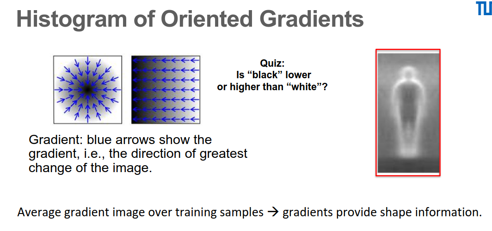
把训练集里所有行人图的梯度图平均起来，可以清楚看到人的轮廓，也就是说 梯度携带了shape信息（而且对光照变化比原始像素robust，因为亮度整体 加减不改变梯度）。
HOG descriptor：把图片切成dense的cell grid，每个cell里统计 梯度方向的直方图，拼起来就是特征向量：
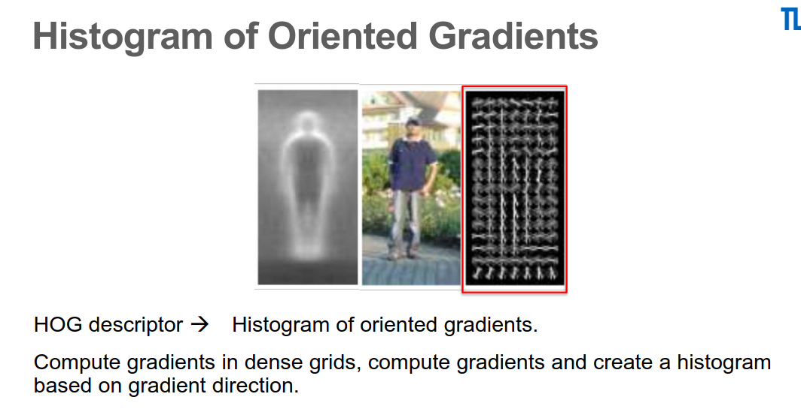
完整的detection流程（Dalal & Triggs, 2005）：
- 选一个包含目标物体（比如行人）的训练集
- 再选一组不包含该物体的图片
- 两组都提取HOG特征
- 训练一个linear SVM做0/1分类（是不是行人）
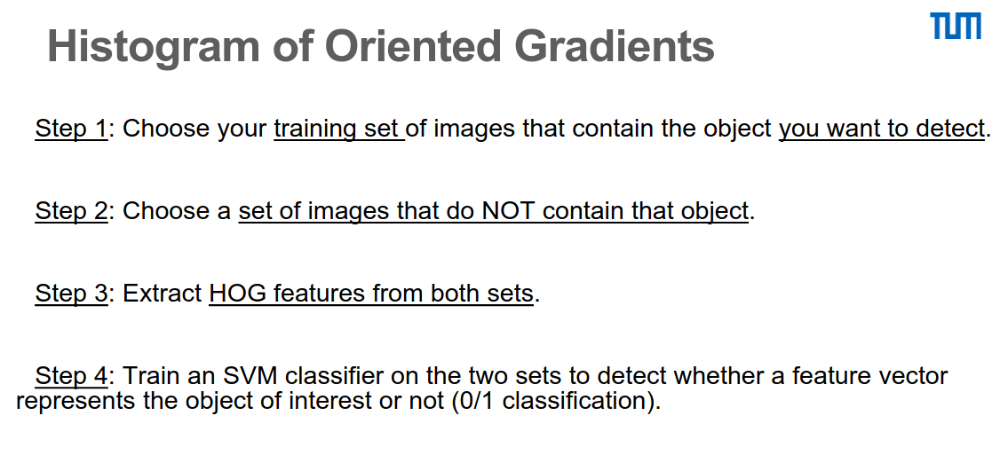
检测时还是sliding window扫全图，每个window提HOG过SVM；不同大小的物体 靠image pyramid（缩放图片多跑几遍）解决。
DPM（Deformable Part Model） （Felzenszwalb et al., 2008）： 很多物体不是刚体，一个模板套不住所有姿态。DPM用bottom-up的思路： 先检测body parts，parts的排布合理就判定为"person"：
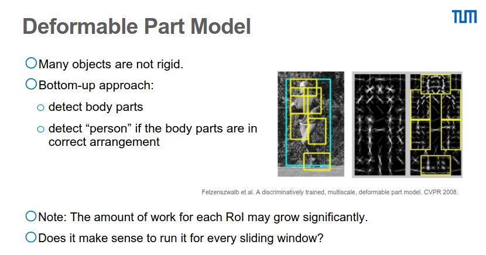
但注意，每个区域的计算量因此显著增长。每个sliding window都跑这么重的 模型，划算吗？这个问题埋下了后面object proposal的伏笔。
3.4 Non-maximum suppression (NMS)
检测器在物体周围会输出一堆互相重叠的box（很多box都在解释同一个物体）， 我们需要只留下"最好"的那个：
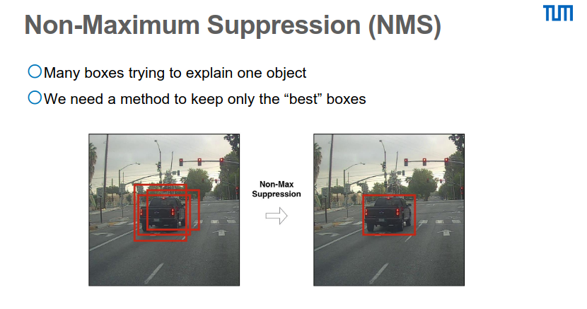
算法：对每个box \(b_i\)，看所有其他box \(b_j\)，如果两者重叠够大 （\(\text{same}(b_i, b_j) > \lambda_{nms}\)，same就是2.1的IoU）而且 \(b_j\) 的 score更高，就丢掉 \(b_i\)。最后留下来的都是局部score最高的box：
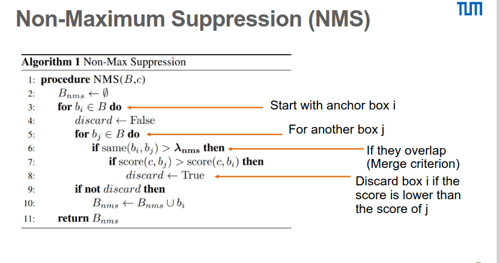
QUIZNMS的时间复杂度是多少？
\(O(N^2)\)，两两比较所有box。
NMS的根本问题：\(\lambda_{nms}\) 是个很难选的超参。用1D的score曲线示意 （两个真实物体挨得近）：
- 阈值选高了（只有重叠非常大才合并）：同一物体的多个响应合并不掉， false positive变多，precision低：
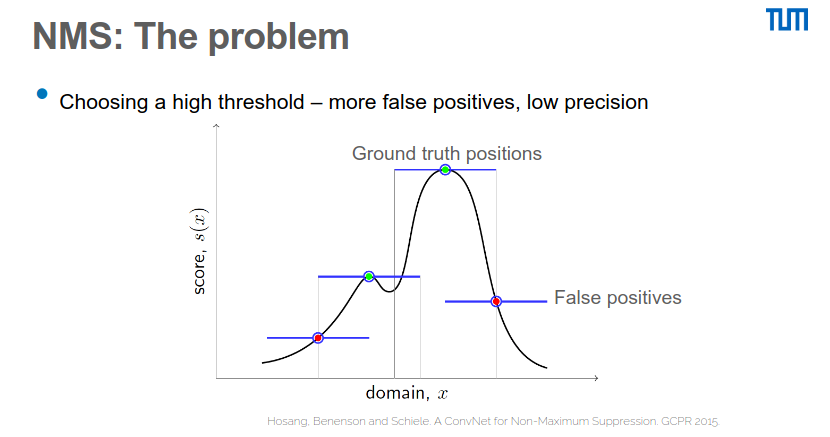
- 阈值选低了（稍微重叠就合并）：两个真实物体被合并成一个， false negative变多，recall低（拥挤场景重灾区）：
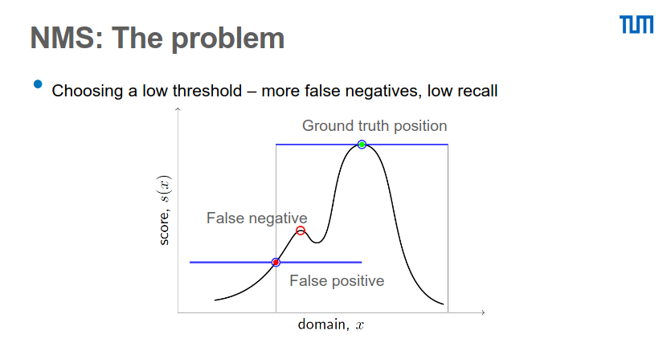
Remark：NMS只在test time用，而且几乎所有检测器（深度学习的也不例外） 都在用，一直到note 4的DETR才靠set prediction 把它甩掉。
4. First deep one-stage detector: OverFeat
进入深度学习。detection = classification + localisation，自然的做法是让CNN 特征后面接两个FC head：regression head输出box坐标 \((x, y, w, h)\)， classification head输出class scores：
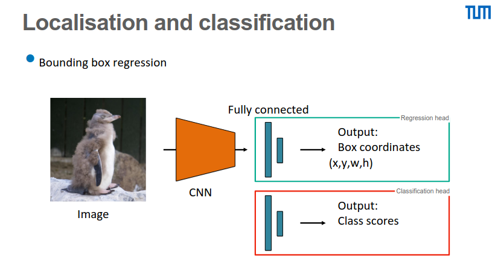
OverFeat（Sermanet et al., 2014）就是 这个思路的第一个有影响力的实现：sliding window + box regression + classification。训练流程是先训classification head、冻住backbone、 再训regression head，测试时两个都用。
QUIZ为什么不两个任务一起训？
其实可以（加权的multi-task loss），后来的检测器全都这么做了。OverFeat 分开训主要是当时multi-task训练的经验还不成熟，这也正是它的历史局限。
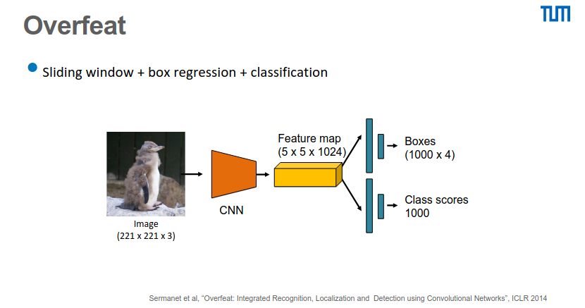
实际使用时在多个位置、多个尺度跑sliding window，每个window都吐出 box和score，最后得到一大堆预测，用greedy merge（NMS的变体）合成最终结果：
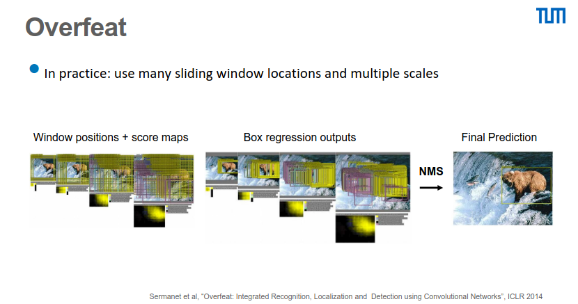
评价：准确率明显提升，主要功劳是深度网络学出来的特征（对比HOG这种 手工特征）。问题：所有position、scale、aspect ratio都要试一遍，太贵； 而且网络只能吃固定分辨率。
顺便做个复杂度分析（为什么sliding window慢、proposal为什么有用）。 设窗口总数为 \(N\)、每个窗口检测的开销为 \(D\)，暴力做法是 \(O(ND)\)。如果先用 一个便宜的方法（开销 \(d\)）预筛出 \(n\) 个候选窗口，再对候选做完整检测， 开销变成 \(O(Nd + nD)\)。预筛划算的条件（忽略常数）：
第一项是RoI比例（筛得越狠越好），第二项是预筛器的相对开销 （越便宜越好）。
QUIZ预筛掉三分之一的窗口，预筛开销 \(d = D/2\)，值得吗？
不值得。\(n/N = 2/3\)，\(d/D = 1/2\)，加起来 \(7/6 > 1\)，比暴力还慢。预筛必须 又狠又便宜才有意义。这个不等式还有个下界：\(n/N\) 不可能低于 （物体数\(/N\)），所以好的proposal方法要在"不漏物体"的前提下把 \(n\) 压到 接近物体数量级。
5. Object proposals
预筛器筛的是什么？我们需要一个class-agnostic的objectness度量，即一个 图像区域"像不像个物体"（不管是什么类别）：
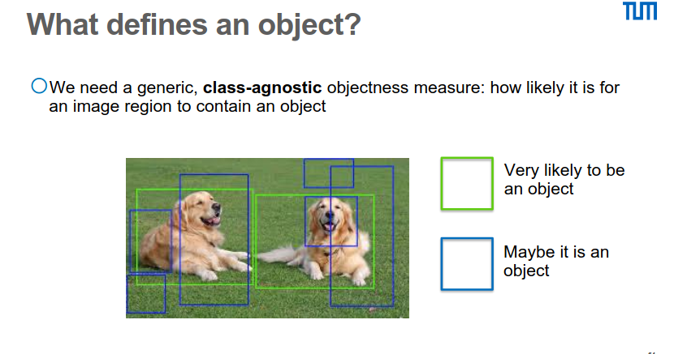
用它生成一批候选的object proposals（RoI），后面接分类器，这就是 two-stage detector的蓝图：proposal generation出候选框，然后对每个候选 做classification（类别分布）和localisation（refine框，输出 \(\Delta x, \Delta y, \Delta w, \Delta h\)）：
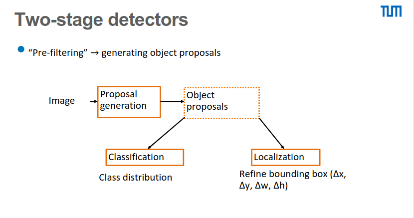
两个经典的heuristic proposal方法：
5.1 Selective search
Uijlings et al., 2013。 层级式分割：先over-segmentation（切得碎碎的），然后贪心地反复合并 最相似的两个segment，直到整张图变成一个segment。合并过程中每一层的 segment都框出来当proposal，天然覆盖多个尺度：
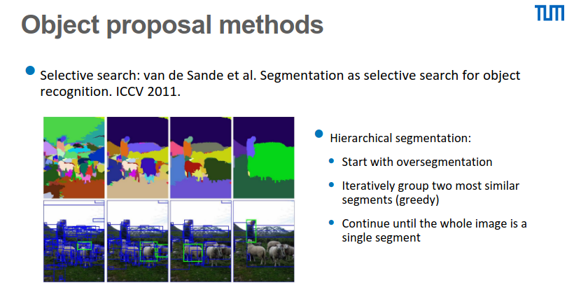
5.2 Edge boxes
Zitnick & Dollár, 2014。 核心观察：一个box完整包住的轮廓（contour）数量，指示了它包含物体的 可能性。box切断很多轮廓就不像物体，包住很多完整轮廓就很像：
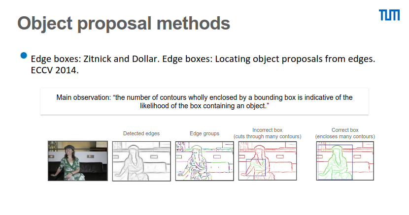
6. The two-stage R-CNN family
"Regions with CNN features"，detection乃至整个CV最有影响力的工作线之一， R-CNN、Fast、Faster、Mask R-CNN加起来引用超过12万：
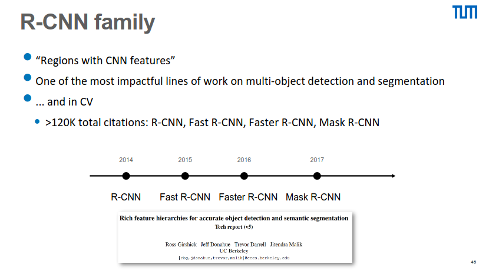
6.1 R-CNN
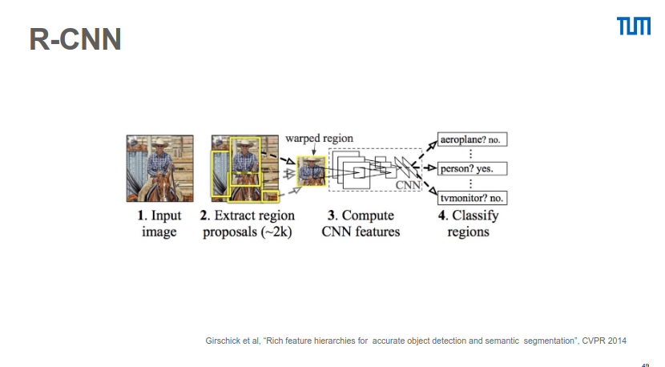
- selective search出约2000个proposal
- 每个proposalwarp成固定的227×227
- 各自过一遍CNN提4096维特征
- 每类一个linear SVM分类 + 一个bounding box regressor微调框
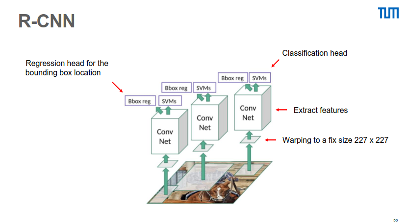
训练分四步：ImageNet预训练CNN、在目标类别上finetune、训SVM、训regressor。
Pros：第一次把CNN特征接进检测管线，而且吃到了transfer learning的 红利（ImageNet预训练，换个FC就能迁移）。效果立竿见影，ILSVRC 2013上 31.4 mAP，比OverFeat的24.3高出一大截：
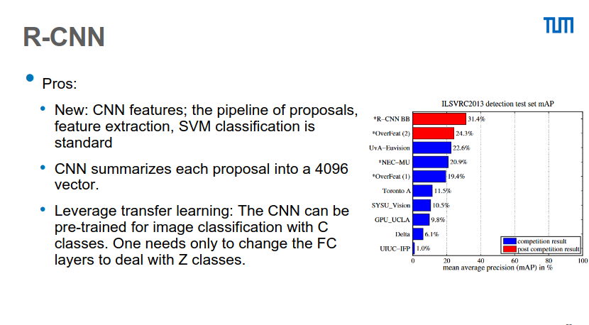
Cons：慢。2000个proposal各过一遍CNN，VGG16要47秒一张图； 训练又慢又复杂（四个阶段）；proposal算法是固定的；特征和SVM分开训练， 不是end-to-end。
6.2 SPPNet
两个目标：更快，以及把proposal整合进训练。共同的拦路虎：网络只能吃 固定尺寸的输入。谁的锅？卷积层对输入尺寸没要求（滑窗操作）， 是FC层需要固定长度的输入。
He et al., 2014的解法：与其crop/warp输入 图片，不如整张图只过一遍卷积，在conv5的feature map上把每个proposal 对应的区域池化成固定长度，再喂FC：
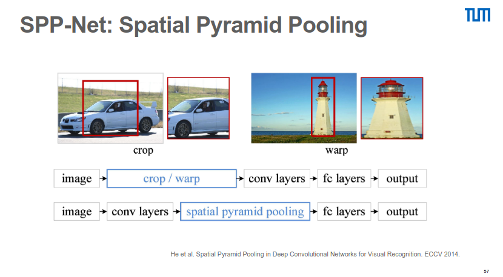
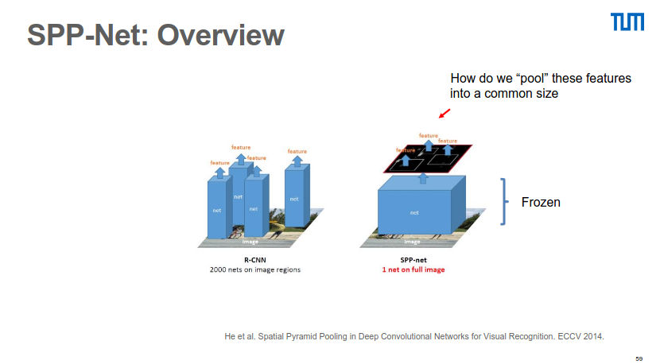
固定长度靠spatial pyramid pooling：把任意大小的区域分别切成4×4、2×2、 1×1的格子做max pooling，拼起来长度恒定：
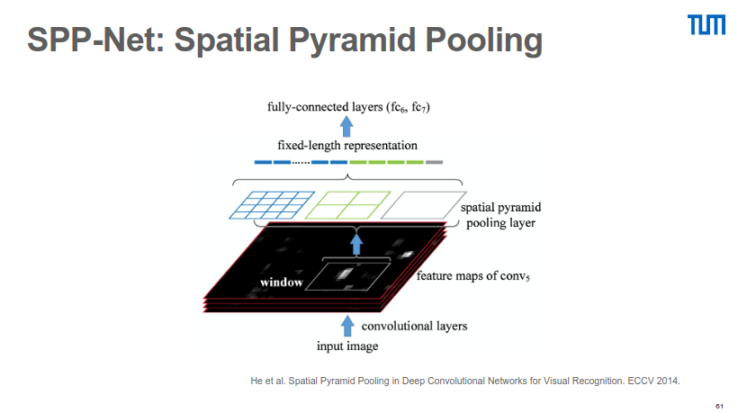
速度大幅提升（卷积只算一遍），但SPPNet冻住了backbone只训FC， 特征本身没法为检测任务优化。
6.3 Fast R-CNN
Girshick, 2015把这条线做成了end-to-end。 核心组件RoI pooling就是单层的SPP：把feature map上任意 \(h' \times w'\) 的 RoI映射成固定的 \(L\)（比如7×7）：
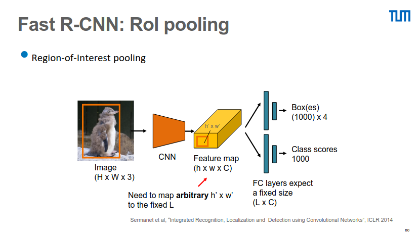
具体做法：把RoI切成固定数量的格子，每格内max pooling：
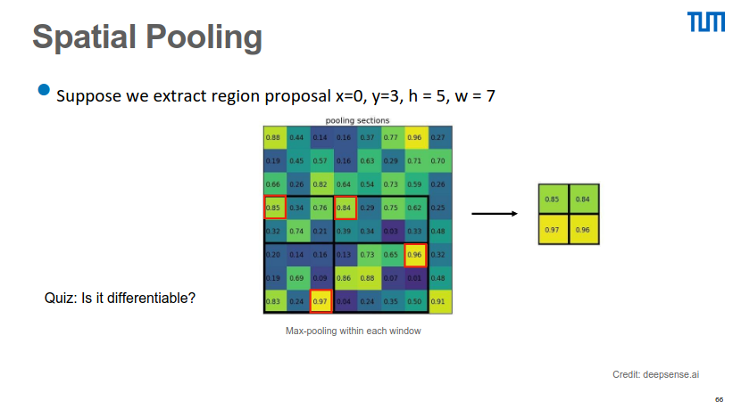
QUIZRoI pooling可微吗？
分两问。对feature map \(S\)：可微（max pooling把梯度路由给最大值那个 位置，和普通池化一样）。对box坐标 \((x, y, h, w)\)：不可微，因为 坐标的舍入和格子划分是离散操作。所以框的坐标没法从pooling后面的loss拿到 梯度，这个缺口后来由RoIAlign（note 3的 Mask R-CNN）和note 4的DETR分别补上。
整体架构：整图过一遍ConvNet（shared computation），RoI pooling取出每个 proposal的定长特征，FC后接softmax分类器（取代SVM）和box regressor， 一个multi-task loss端到端训练：
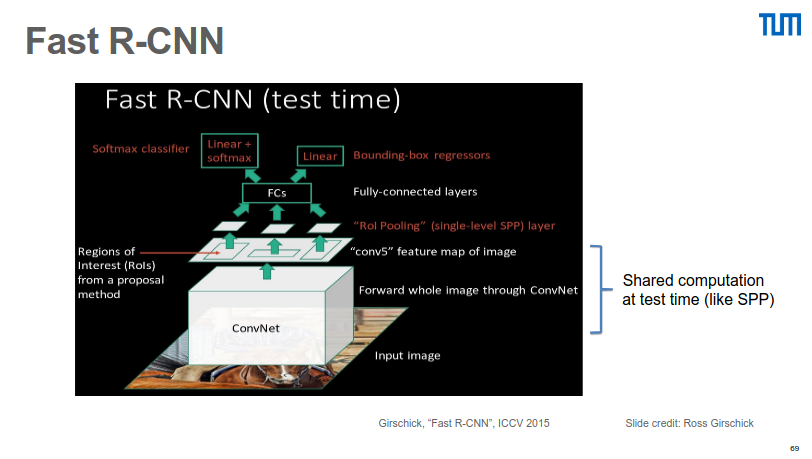
结果（VGG-16，Pascal VOC 2007）：
| R-CNN | Fast R-CNN | |
|---|---|---|
| 训练时间 | 84小时 | 9.5小时（8.8×） |
| 测试每张图 | 47秒 | 0.32秒（146×） |
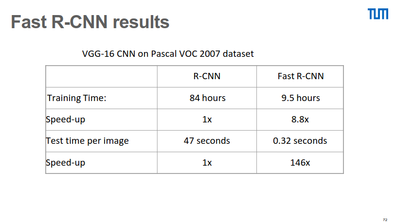
6.4 RPN and Faster R-CNN
现在的瓶颈只剩proposal本身（selective search在CPU上约2秒一张图）。 Ren et al., 2015的答案：proposal也交给 网络，在共享的feature map上加一个Region Proposal Network（RPN）：
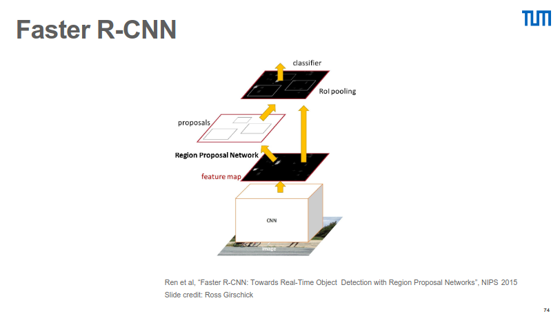
RPN怎么出proposal？多物体检测的难点是输出数量不定（3个物体12个数， 14个物体56个数）。RPN的解法是densely地铺一组固定数量的anchor当上界： feature map的每个位置放 \(n = 9\) 个anchor（3种scale × 3种aspect ratio）， 每个位置用一个256维descriptor预测：
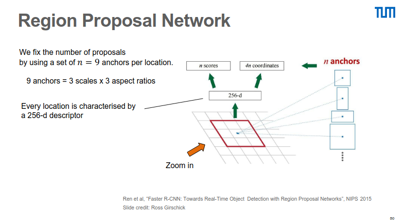
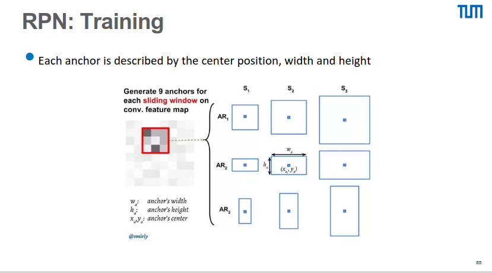
QUIZ每个位置的proposal encoding是多少维？（n个anchor）
\(6n\)：每个anchor要2个分类score（object/non-object）加4个坐标修正量。 RPN本身就是两层conv，fully convolutional：
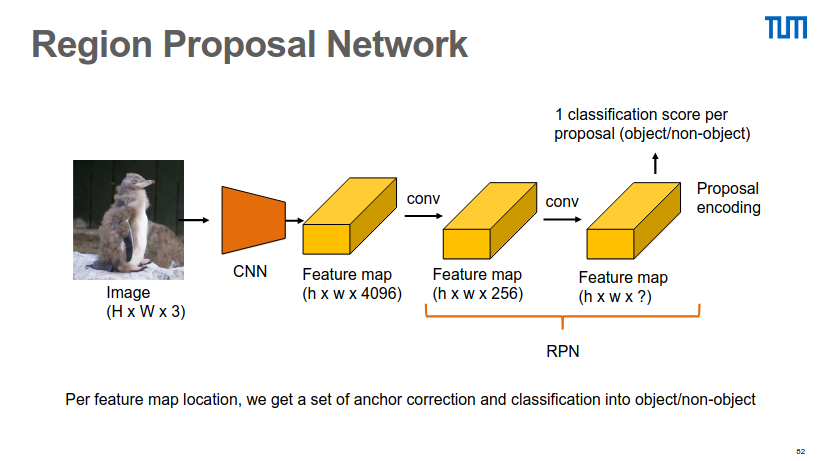
RPN训练：
- 分类的GT：anchor和GT box的IoU \(> 0.7\) 记 \(p^* = 1\)（前景）， \(< 0.3\) 记 \(p^* = 0\)（背景），中间的不参与训练
- 每张图随机采256个anchor组成mini-batch（前景背景平衡）， binary cross-entropy；有物体的anchor再算regression loss
- 网络回归的不是绝对坐标，而是相对anchor的归一化修正量：
位置除以anchor尺寸做归一化，宽高取log让缩放变加法，回归用smooth L1。
Faster R-CNN = RPN + Fast R-CNN，四个loss联合训练（RPN的分类+回归， Fast R-CNN的分类+回归）：
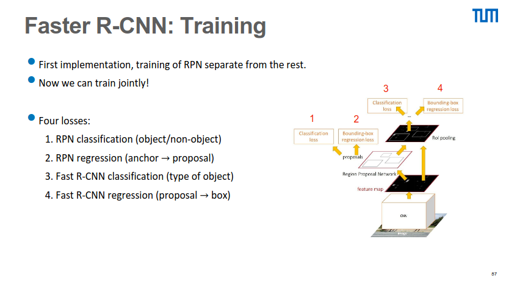
结果：测试0.2秒一张图（比R-CNN快250×），mAP 66.9，proposal是学出来 的所以更准，整条管线end-to-end。到这里two-stage的骨架就定型了。
6.5 Addressing scale variance: FPN
还剩一个老大难：CNN不是scale-invariant的，物体尺度变化非常大。 RoI pooling把特征"规范化"到固定大小，帮了一点，但不够。三个思路 （Lin et al., 2017）：
- Idea A：image pyramid。图片缩放成多个尺度各过一遍CNN。准（尤其测试 时），但计算量爆炸：
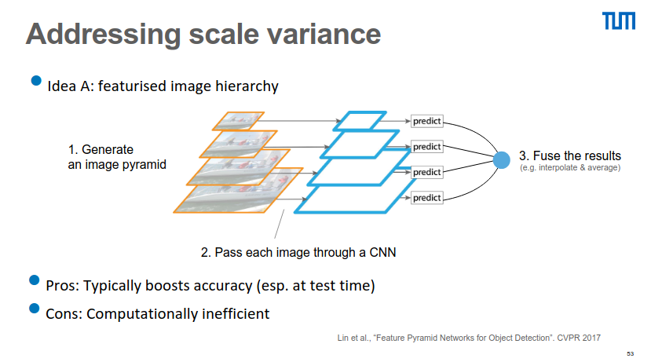
- Idea B：pyramidal feature hierarchy。直接在CNN自带的多层feature map上 分别预测（深监督）。高效，但浅层特征语义太弱，准确率有限：
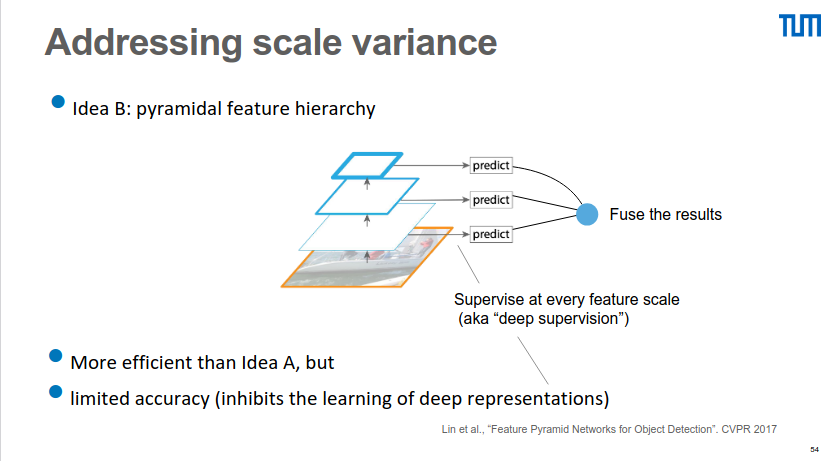
- Idea C：Feature Pyramid Network（FPN）。在B的基础上加一条 top-down通路和skip connection：深层的语义顺着上采样流回高分辨率层， 每一层都又快又有深层语义：
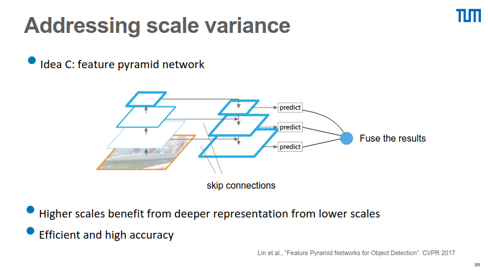
实现非常简单：横向1×1卷积对齐通道，top-down 2×最近邻上采样，逐元素相加：
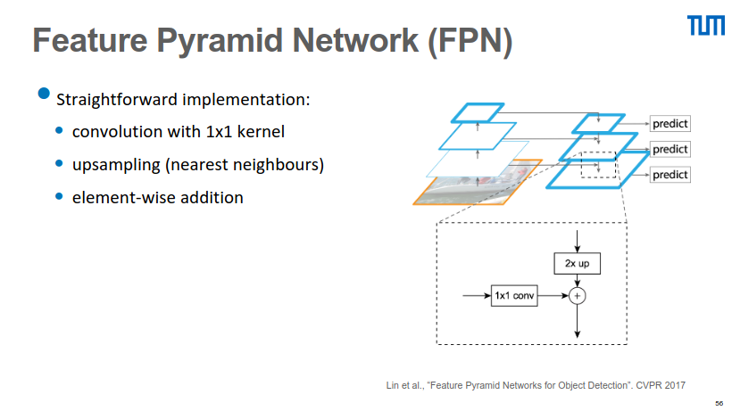
和RPN配合：每个pyramid level一个尺度的anchor，测试时合并所有level的预测。
QUIZ大物体和小物体分别在哪个level检测？
大物体在高level（分辨率粗、receptive field大），小物体在低level （分辨率细）。FPN对小物体的recall提升尤其明显，至今仍在广泛使用，比如 note 4里SAM 2的image encoder就用了FPN。
7. Modern one-stage detectors
回头看Faster R-CNN的四个loss：RPN先做一次"是不是物体"，Fast R-CNN又做 一次"是什么物体"，概念上同一件事做了两遍。那为什么不直接让每个anchor 一步到位预测类别？把RoI pooling和第二阶段整个扔掉：
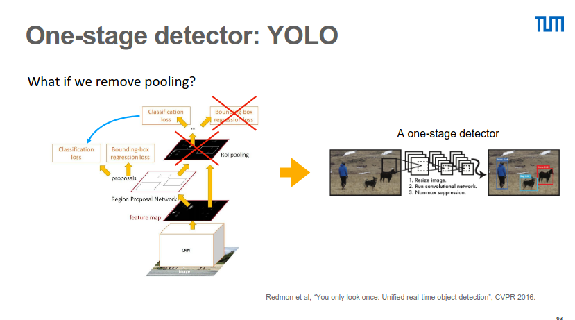
7.1 YOLO
Redmon et al., 2016，You Only Look Once： 把图切成粗的 \(S \times S\) 网格，每个cell配 \(B\) 个anchor，每个anchor预测 localisation \((x, y, w, h)\) + 一个confidence（有没有物体）+ \(C\) 类的分布：
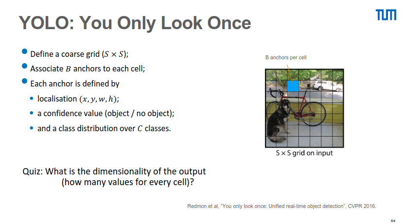
QUIZ每个cell的输出是多少维？
\(B \times 5 + C\)（每个anchor5个数，类别分布每个cell共享一份）。整个输出是 \(S \times S \times (B \cdot 5 + C)\)，VOC上就是 \(7 \times 7 \times 30\)。
推理一遍前向 + NMS，真正的实时检测：
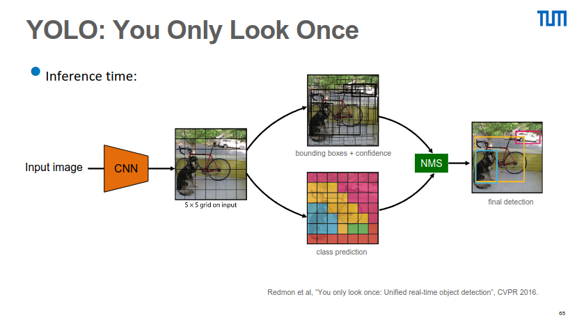
问题：比Faster R-CNN快但不如它准。网格太粗、每个cell的anchor太少， 小物体是重灾区；对尺度变化也不robust。
QUIZ为什么对尺度不robust？
因为它只在最后一层的单尺度feature map上做预测，正是6.5里Idea B想 解决的问题。
7.2 SSD
Liu et al., 2016：把多尺度接上。YOLO在 单一representation上预测，SSD在多个尺度的feature map上都放anchor做 预测（只加了几层extra layers）：
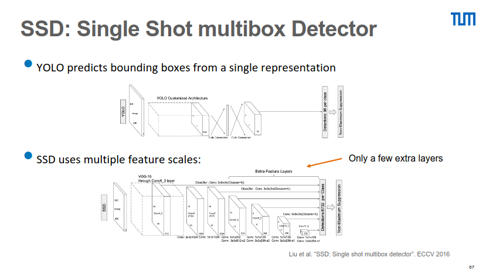
比YOLO准，而且低分辨率输入也work（更快）。但仍落后于two-stage， data augmentation（尤其随机缩放）非常关键。
7.3 Focal loss and RetinaNet
one-stage为什么一直打不过two-stage？答案是前景背景的类别失衡。 two-stage的分类器只看proposal筛过的1~2k个"有意思"的区域，正负样本可控； one-stage要对十万量级的密集位置全部分类，其中前景寥寥无几：
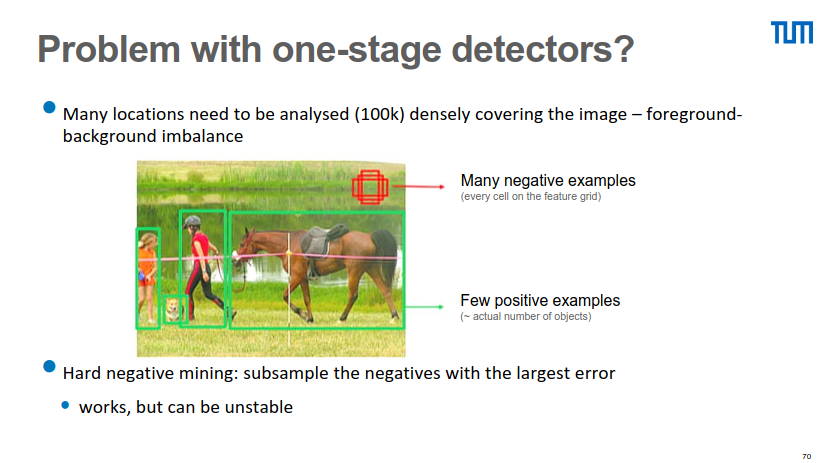
hard negative mining（挑错得最狠的负样本）能缓解但不稳定。 Lin et al., 2017从loss下手。先看 cross-entropy：一个很难的样本（\(p_t \approx 0.1\)）loss约2.3，一个简单样本 （\(p_t \approx 0.9\)）loss约0.1，看起来没问题，但简单样本有百万个： \(100 \times 2.3 = 230\) 对 \(10^6 \times 0.1 = 10^5\)，梯度被海量简单负样本 淹没：
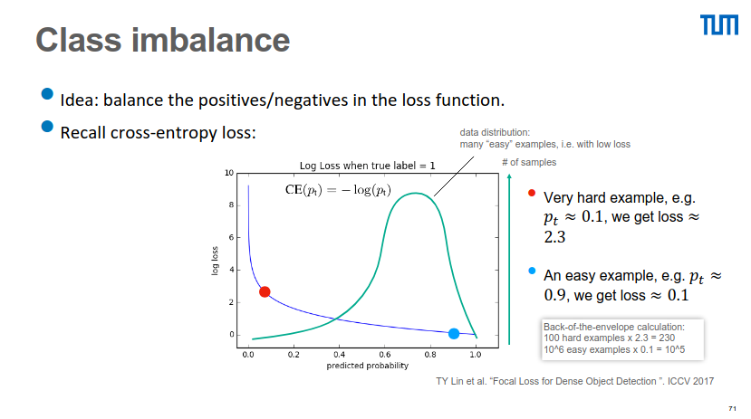
Focal loss给CE乘一个调制因子：
\(\gamma = 0\) 时退化为CE；\(\gamma\) 越大，分对了的简单样本被压得越狠 （\(\gamma = 2\) 时 \(p_t = 0.9\) 的样本loss降低100倍），难样本几乎不受影响：
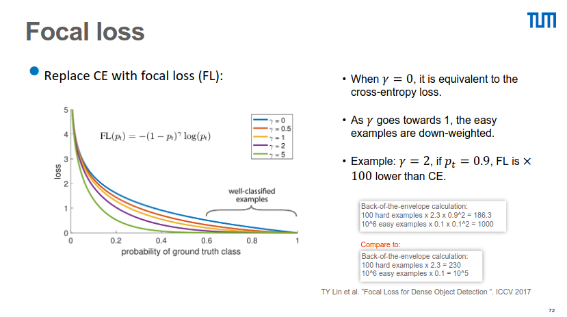
RetinaNet把三块拼起来：one-stage（像YOLO/SSD）+ ResNet backbone + FPN多尺度 + focal loss：
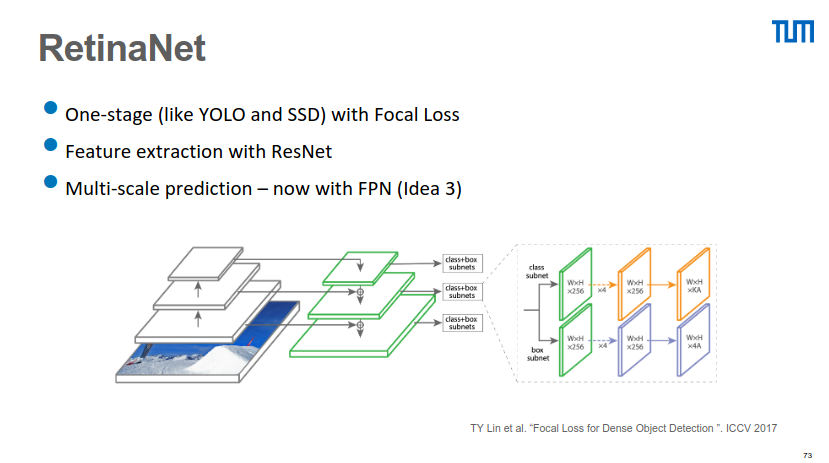
结果：one-stage第一次在精度上超过two-stage，还更快（\(\gamma = 2\)、 \(\alpha = 0.25\) 这些超参来自论文的validation table，这类表格现在你已经 能自己读懂了）：
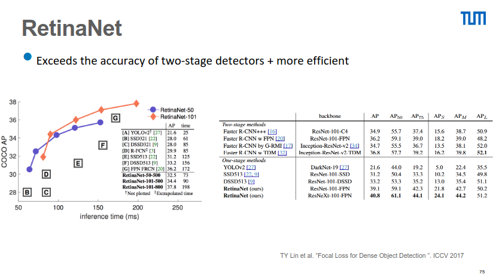
Two-stage vs one-stage总结：two-stage更准（对尺度变化robust）但技术上 更绕（pooling）也更慢；one-stage设计简单、够快，配上重的augmentation 精度也有竞争力。
8. Beyond boxes
8.1 Keypoint-based detection: CornerNet, CenterNet
box的参数化方式不止一种（1.4的Quiz），那能不能干脆不用anchor？ CornerNet把detection变成关键点检测： 分别预测top-left和bottom-right两张corner heatmap，再学一个embedding把 属于同一物体的两个角配成对：
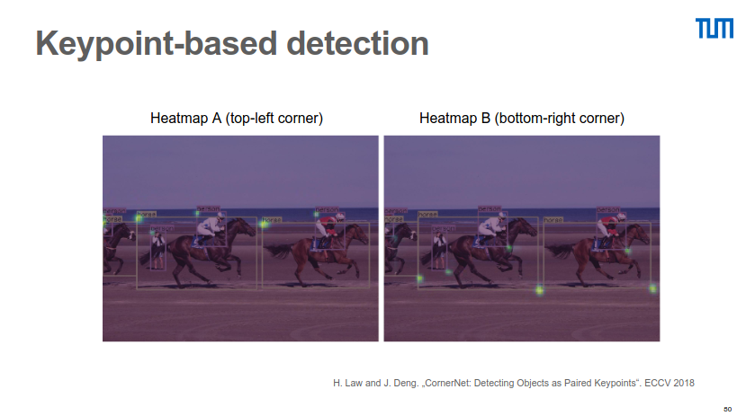
CenterNet更进一步，直接把物体建模成 中心点（objects as points），宽高等属性从中心点回归出来。
8.2 Sequential detection
另一个思路：Stewart et al., 2016用LSTM 一个接一个地输出检测结果（预测到没有为止），对拥挤场景（人群）特别 有意思，也算是note 4里"detection是set prediction"思想的早期前奏：
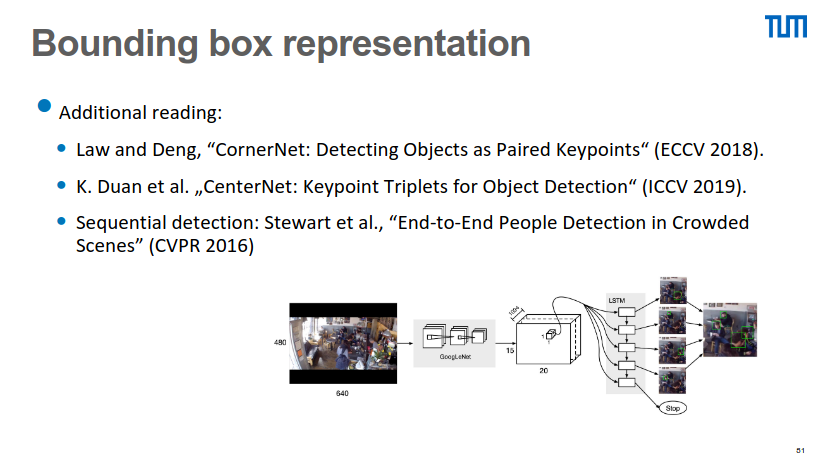
9. Spatial transformers
最后一个话题从一个失败案例说起：训练集里的企鹅都是正的（photographic bias，3.2里rotation任务靠的就是它），测试时来一张斜的就挂了。我们想要的 性质是equivariance：
即先变换再提特征，等于先提特征再变换（\(A\) 是比如仿射变换）：
Spatial Transformer Networks （Jaderberg et al., 2015）让网络 自己学会把输入"摆正"：
模块分三件套：
- Localisation net：看输入 \(U\)，回归出变换参数 \(\theta\)
- Grid generator：用 \(\theta\)（仿射就是2×3矩阵）生成采样网格 \(\mathcal{T}_\theta(G)\)，即输出的每个像素对应输入的哪个位置：
- Sampler：按网格用bilinear interpolation采样出输出 \(V\)。 bilinear是可微的，所以整个模块fully differentiable，插进任何网络 端到端训练：
神奇之处：只用class label监督（没有任何box标注），STN就自己学会了 把RoI找出来摆正；训练多个ST还会各自盯上物体的不同部位（鸟头、鸟身）； 还可以串成一条链逐步refine。
Summary：无监督地学localisation、给网络带来（近似的）equivariance、 完全可微。缺点是场景一复杂就难训练。但它的bilinear sampler成了传家宝， 后来的RoIAlign、deformable convolution、optical flow warping （note 3）全都建立在"可微采样"这个思想上。
10. The big picture
一张图收尾：detection二十年的里程碑，从traditional（VJ 2001 → HOG 2005 → DPM 2008）到deep learning后分成two-stage（R-CNN → SPPNet → Fast → Faster → FPN）和one-stage（YOLO → SSD → RetinaNet → CornerNet → CenterNet → DETR） 两条线，正好就是这篇笔记的目录，而DETR之后的故事在 note 4：
课件列的open challenges：3D object detection、open vocabulary、multi-modal （比如红外）、camouflaged object detection、特殊场景（无人机视角）等。 想系统回顾可以读综述 Object Detection in 20 Years（Zou et al.）。
References
- Viola & Jones. Rapid Object Detection using a Boosted Cascade of Simple Features. CVPR 2001.
- Dalal & Triggs. Histograms of Oriented Gradients for Human Detection. CVPR 2005.
- Sermanet et al. OverFeat: Integrated Recognition, Localization and Detection using Convolutional Networks. ICLR 2014.
- Uijlings et al. Selective Search for Object Recognition. IJCV 2013.
- Zitnick & Dollár. Edge Boxes: Locating Object Proposals from Edges. ECCV 2014.
- Girshick et al. Rich feature hierarchies (R-CNN). CVPR 2014.
- He et al. Spatial Pyramid Pooling (SPPNet). ECCV 2014.
- Girshick. Fast R-CNN. ICCV 2015.
- Ren et al. Faster R-CNN. NeurIPS 2015.
- Redmon et al. You Only Look Once (YOLO). CVPR 2016.
- Liu et al. SSD: Single Shot MultiBox Detector. ECCV 2016.
- Lin et al. Focal Loss for Dense Object Detection (RetinaNet). ICCV 2017.
- Law & Deng. CornerNet: Detecting Objects as Paired Keypoints. ECCV 2018.
- Zhou et al. Objects as Points (CenterNet). arXiv 2019.
- Jaderberg et al. Spatial Transformer Networks. NeurIPS 2015.
- Felzenszwalb et al. A Discriminatively Trained, Multiscale, Deformable Part Model. CVPR 2008.
- Lin et al. Feature Pyramid Networks for Object Detection. CVPR 2017.
- Stewart et al. End-to-End People Detection in Crowded Scenes. CVPR 2016.
- Zou et al. Object Detection in 20 Years: A Survey. Proc. IEEE 2023.
Comments